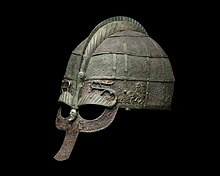

Land of Vikings
The Swedish Viking Age lasted roughly from the eighth century to the 11th century.
It is believed that Swedish Vikings and Gutar mainly travelled east and south, going to Finland, Estonia, the Baltic countries, Russia, Belarus, Ukraine, the Black Sea and even as far as Baghdad.
Their routes passed through the Dnieper south to Constantinople, on which they carried out numerous raids. The Byzantine Emperor Theophilos noticed their great skills in war,
and invited them to serve as his personal bodyguard, known as the Varangian Guard. The Swedish Vikings, called Rus are believed to be the founders of Kievan Rus'
A Cold but beautifull country
Sweden, formally the Kingdom of Sweden, is a Nordic country located on the Scandinavian Peninsula in Northern Europe. It borders Norway to the west and north,
Finland to the east, and is connected to Denmark in the southwest by a bridge–tunnel across the Öresund.
At 450,295 square kilometres (173,860 sq mi), Sweden is the largest Nordic country and the fifth-largest country in Europe.
The capital and largest city is Stockholm. Sweden has a population of 10.5 million, and a low population density of 25.5 inhabitants per square kilometre (66/sq mi),
with around 87% of Swedes residing in urban areas, which cover 1.5% of the entire land area, in the central and southern half of the country. Nature in Sweden is dominated by forests and many lakes,
including some of the largest in Europe. Many long rivers run from the Scandes range, primarily emptying into the northern tributaries of the Baltic Sea. It has an extensive coastline and most of the population lives near a major body of water.
With the country ranging from 55°N to 69°N, the climate of Sweden is diverse due to the length of the country.
Germanic peoples have inhabited Sweden since prehistoric times, emerging into history as the Geats (Swedish: Götar) and Swedes (Svear) and constituting the sea peoples known as the Norsemen.
A unified Swedish state emerged during the early 11th century. After the Black Death in the middle of the 14th century killed about a third of the Scandinavian population,
the dominance of the Hanseatic League in Northern Europe threatened Scandinavia economically and politically.
This led to the formation of the Scandinavian Kalmar Union in 1397, which Sweden left in 1523. When Sweden became involved in the Thirty Years' War on the Protestant side, an expansion of its territories began, forming the Swedish Empire,
which remained one of the great powers of Europe until the early 18th century.
Sweden is a highly developed country ranked seventh in the Human Development Index, it is a constitutional monarchy and a parliamentary democracy, with legislative power vested in the 349-member unicameral Riksdag.
It is a unitary state, divided into 21 counties and 290 municipalities. Sweden maintains a Nordic social welfare system that provides universal health care and tertiary education for its citizens.
It has the world's 14th highest GDP per capita and ranks very highly in quality of life, health, education, protection of civil liberties, economic competitiveness, income equality, gender equality and prosperity.
Sweden joined the European Union on 1 January 1995 but rejected Eurozone membership following a referendum. It is also a member of the United Nations, the Nordic Council, the Schengen Area, the Council of Europe,
the World Trade Organization and the Organisation for Economic Co-operation and Development (OECD).